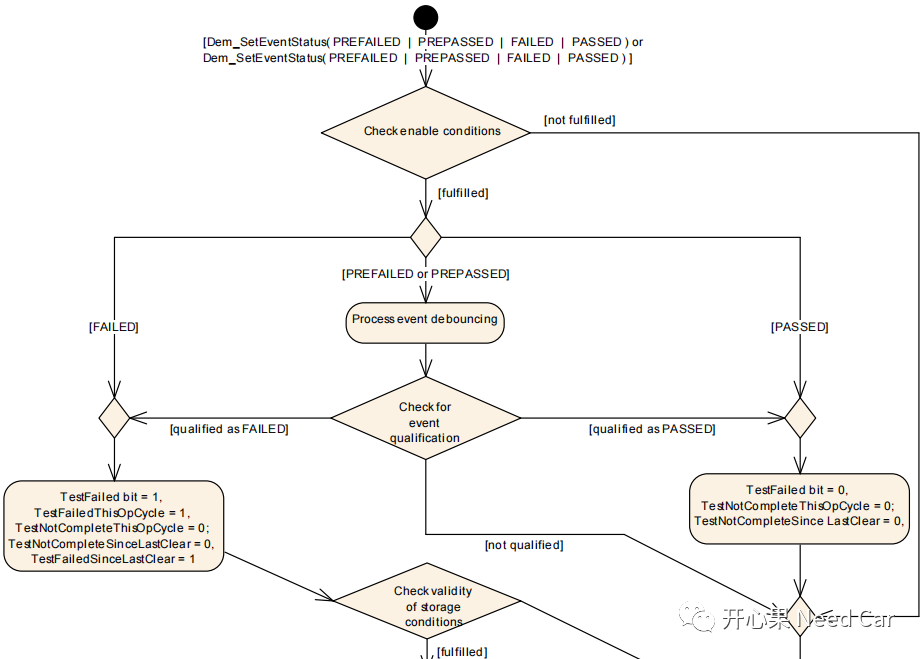
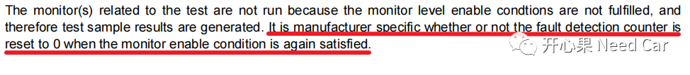
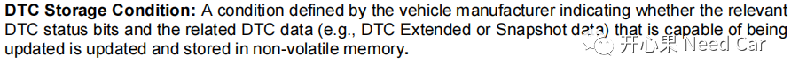
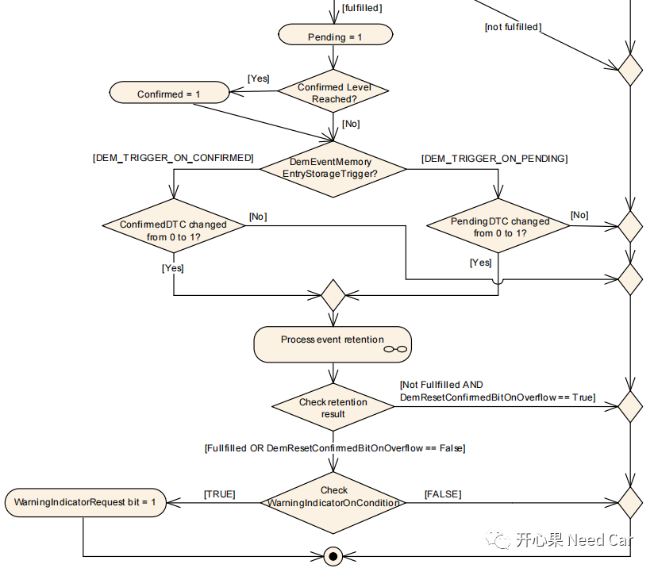
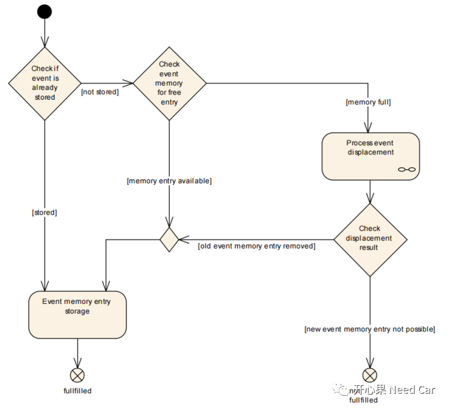

做诊断开发，绕不开存储问题。当某个监控Event故障以后，对应DTC的快照信息（Snapshot）、拓展数据（Extended Data）等均需要存储。了解Event内存管理从哪里入手呢？似乎有点老虎吃天。不妨从DEM（Diagnostic Event Manager）的"Event memory management"聊起。本文关注两点：
根据项目的需求，会对关注的Event进行监控（Monitor）,确保车辆运行过程中，这些Event的可靠性。这些Event是什么呢？eg：电压是否短路、CAN通信是否Busoff、通信报文是否丢失等等。
Autosar提供了故障上报的标准接口Dem_SetEventStatus()或者Dem_ReportErrorStatus()。通过这两个接口可以将Event的状态（PREFAILED | PREPASSED | FAILED | PASSED）上报给DEM。具体的事件故障信息的存储流程如下所示：

（1）检查Event监控使能条件（enable conditions）的有效性，如果无效，则忽略Event的处理，即：不管上报何种Event Status，均不处理。注意：使能条件的检查是指每次Event状态上报给DEM时均需要检查，即每次调用Dem_SetEventStatus()或者Dem_ReportErrorStatus()上报Event状态时均先检查使能条件。这里延伸一下FDC（fault detection counter）的处理问题：如果Event的使能条件不满足，Event对应的FDC是否需要复位？答：看主机厂的要求，FDC复位与否均可，但是个人更倾向FDC复位的处理。
使能条件有哪些呢？eg：诊断电压范围、对应的PNC是否置位、是否busoff等。具体条件需要参考项目需求，不同的Event也可能对应不同的使能条件；（2）Event监控使能条件满足以后，根据上报的Event Status，进行处理：- 如果上报的Event Status == FAILED，则将UDS Status Bit0（Test Failed bit）、Bit1（Test Failed This Operation Cycle）、Bit5（Test Failed Since Last Clear)置位（=1）。Bit4（Test Not Complete Since Last Clear）和Bit6（Test Not Complete This Op Cycle）清零（=0）。
- 如果上报的Event Status == PASSED，则将UDS Status Bit0（Test Failed bit）复位，Bit4（Test Not Complete Since Last Clear）和Bit6（Test Not Complete This Op Cycle）清零。
- 如果上报的Event Status == PREFAILED or PREPASSED，则进行去抖处理（debouncing），Event完成去抖以后，需要检测其是否达到对应的成熟度（Qualification），即：FAILED或者PASSED。如果Event没有达到对应的成熟度，则继续监控。
提示：Event Status是指事件状态，即：PREFAILED | PREPASSED | FAILED | PASSED等，而UDS Status是指Event对应DTC的8个bit状态位。一个DTC可以对应多个Event。（3）当Event Status == FAILED以后，检查Event存储条件的有效性，如果不满足存储条件则跳出剩余流程，如果存储条件有效，则执行Event对应信息的存储动作；存储条件如何理解呢，与使能条件有什么不同？eg：存储数据是否需要更新就可以作为存储条件的检查。同一个Operation Cycle，如果某个事件故障发生了多次，不同的时间点，对应的快照信息或者拓展数据不同，是否需要更新这些信息可以设置。
14229-1中对DTC Storage Condition的解释：

解释：当DTC status bit再次置位的时候，eg：当前的Operation Cycle，Bit0（Test Failed bit）再次置位，对应的DTC Extended或者Snapshot data已经不同与上次故障发生的数据，同时也满足了Bit3（Confirmed DTC bit）置位，是否需要将此次故障数据存储更新到NVM即可作为存储条件。

（4）Event对应信息存储有效时，则Event对应的UDS Status Bit2(Pending DTC bit)置位。之后进一步判断Event是否满足Confirmed条件，即：事件Failed的次数是否达到confirmation threshold（eg：1），如果满足，则置位Bit3（Confirmed DTC bit），否则，进一步判断Event存储的触发方式；（5）Event信息存储方式如果是DEM_TRIGGER_ON_CONFIRMED，则需要进一步识别Bit3（Confirmed DTC bit），如果Bit3置位则进一步处理Event信息的相关存储动作，否则，跳出Event存储流程；Event信息存储方式如果是DEM_TRIGGER_ON_PENDING，则需要进一步识别Bit2(Pending DTC bit)，如果置位则进一步处理Event信息的相关存储动作，否则，跳出Event存储流程；（6）Event相关信息进行存储。按照14229-1要求，这些数据主要包含两类：快照数据（snapshot data，也称冻结帧（freeze frames）)和拓展数据（extended data）；（7）检查Event的存储结果，即：是否有效地存储到NVM中。Event不满足存储且DemResetConfirmedBitOnOverflow == TRUE，表明事件信息没有被存储。如果存储成功或者DemResetConfirmedBitOnOverflow == FALSE，则进一步检查指示灯的使能条件，如果满足使能条件，则将状态字节Bit7（WarningIndicatorRequest bit）置位。至此，执行完Event的存储流程。当Event对应的DTC满足存储条件时，需要对此Event相关的数据（freeze frames, extended data）进行存储，这里的freeze frames是指Snapshot。具体Event数据存储流程如下所示：

（2）如果Event没有存储，检查是否有空用的存储空间，如果有可用的存储空间则存储Event对应数据；如果存储空间已满，则进行替换策略的处理（displacement）；提示：工程中，会设置很多DTC，受限于硬件资源（NVM Size），一般不会将所有Event的故障信息都存储。举例：设置了200个DTC，只存储10个DTC对应Event的故障信息，如果已经存储了10个DTC的故障信息，当有新的Event Failed时，需要按照预先设计的替换策略进行故障信息的替换。即：将已经存储在NVM中的某个DTC对应故障信息清除，存储更重要Event故障信息。
（3）如果Event对应DTC无法替换已存储的DTC，则存储失败。如果Event对应DTC可以替换已存储的DTC，则将已经存储的old DTC替换出来，new DTC存储到内存中。提示：Autosar中，1表示Event的Priority最高，数值越大，说明Event的Priority越低，如下所示：点击下方关注，一起聊聊Autosar/嵌入式，如果需要，联系作者进群，给你更专业的解答